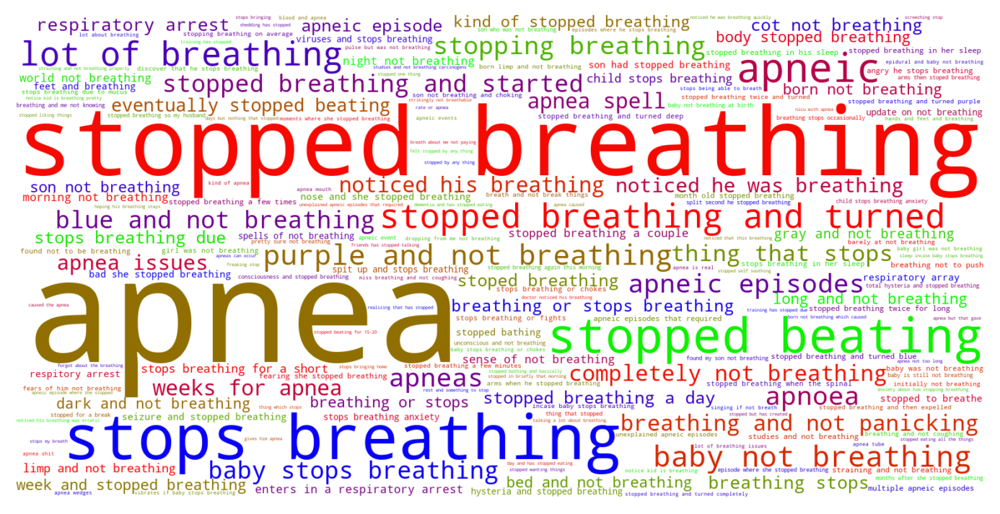

Jump to section:
Samples from Social CorpusHits per UMLS Alias on Social Corpus
Word Cloud Comparison
Embedding Space Comparison
Nearest Neighbors by Semantic Type
Related Analysed Concepts
Samples from Social Corpus
it could be that I was reading about water breaking not being a common sign of labor that as I stood up , I felt a leak again and thought the worse .
Confidence: 0.520. Reddit link
3rd : I BF 6 months the stopped because she was teething .
Confidence: 0.514. Reddit link
He has had some struggles with his health from the beginning ( reflux and tracheomalacia blocking his airway , and hydronephrosis ) and I am having some major postpartum / probably somewhat normal because my child stops breathing anxiety and I'm not sure what else I can do to help my boy or if I am being totally crazy .
Confidence: 0.719. Reddit link
That was a really hard day for me as I was there when she stopped breathing twice and turned blue and it took a minute or two for her to start breathing again .
Confidence: 0.766. Reddit link
When I did I stopped breathing & slumped over onto my 7 year old daughter .
Confidence: 1.000. Reddit link
No choking or coughing , just nursing away when she suddenly just kind of stopped breathing , like a switch turned off .
Confidence: 0.879. Reddit link
Lately it's all I can do to take a deep breath and not break things .
Confidence: 0.744. Reddit link
The baby's heart stopped beating at four months , and I had to have surgery after my body didn't recognize the loss .
Confidence: 0.689. Reddit link
When does the screeching stop ?
Confidence: 0.552. Reddit link
Finally , we discussed giving me an epidural so I could rest and something to stop the contractions to give the baby a rest .
Confidence: 0.552. Reddit link
Hits per UMLS Alias on Social Corpus
-
apnea
137 hits
-
stopped breathing
122 hits
-
not breathing
80 hits
-
stops breathing
37 hits
-
breathing stops
10 hits
-
has stopped breathing
8 hits
-
apneic episodes
8 hits
-
apneic
7 hits
-
breathing stop
5 hits
-
breathing stopping
5 hits
-
respiratory arrest
4 hits
-
apneas
3 hits
-
apnoea
2 hits
-
apnea nos
1 hits
-
apnoeas
0 hits
-
pulmonary arrest
0 hits
-
apnoeic
0 hits
-
arrest respiratory
0 hits
-
apnea finding
0 hits
-
stops breathing finding
0 hits
-
absence spontaneous respiration
0 hits
-
apnoea nos
0 hits
Word Cloud Comparison
Keywords matching C0003578
Keywords matched against concept. Word size represents frequency.
Keywords co-occurring with C0003578
Co-occurrence is measured at the document-level (i.e. Reddit submissions). Frequencies are normalized to account for keywords common to all CUIs.
Embedding Space Comparison
T-SNE comparison for word embeddings learned from medical domain (EuroPMC) and social media (Reddit) independently.
Pearson correlation for union of closest 1000 neighbors: 0.223
Nearest Neighbors by Semantic Type
Most similar concepts in each of the selected UMLS semantic types. Based on concept embeddings from social corpus.
T184 (Sign or Symptom)
-
C0003578
Apnea
1.000 Similarity
-
C0242706
Oxygen stress breathing
0.870 Similarity
-
C0423729
Breathing pain
0.850 Similarity
-
C0553668
Breathing labor
0.831 Similarity
-
C0013404
Trouble breathing
0.831 Similarity
-
C0221161
Breathing shallow
0.808 Similarity
-
C1321587
Breaths deep
0.795 Similarity
-
C0476273
Respiratory distress
0.779 Similarity
T042 (Organ or Tissue Function)
-
C0043229
Breathing work
0.874 Similarity
-
C1160388
Respiratory tube development
0.691 Similarity
-
C0231940
Oxygenation
0.678 Similarity
-
C1959585
Heart rate control
0.522 Similarity
-
C0027045
Heart beating
0.518 Similarity
-
C0010985
Night vision
0.512 Similarity
-
C0005778
Clotting
0.504 Similarity
-
C0034929
Reflex
0.504 Similarity
T039 (Physiologic Function)
-
C1456599
Lungs breathing
0.866 Similarity
-
C0035203
Ventilation
0.848 Similarity
-
C0234451
S sleep
0.532 Similarity
-
C0018767
Hear
0.509 Similarity
-
C0026820
Muscle contraction
0.500 Similarity
-
C0005775
Circulation
0.496 Similarity
-
C3179159
Sedative effects
0.494 Similarity
-
C0035245
Lung function
0.489 Similarity
T074 (Medical Device)
-
C0184106
Breathing tube
0.866 Similarity
-
C0179419
Breathing bag
0.849 Similarity
-
C0492230
Support breathing tube
0.754 Similarity
-
C3696780
Tube oxygen
0.728 Similarity
-
C3873659
Sleep apnea mask
0.707 Similarity
-
C0462877
Oxygen giving set
0.692 Similarity
-
C0181744
Oxygen mask
0.692 Similarity
-
C0182130
Oxygen monitors
0.688 Similarity
T201 (Clinical Attribute)
-
C0231832
Breathing rate
0.838 Similarity
-
C0035234
Breathing sound
0.783 Similarity
-
C0429622
Oxygen supply
0.730 Similarity
-
C0007165
Heart output
0.548 Similarity
-
C0521982
Successful treatment
0.537 Similarity
-
C0233131
Intensity uterine contraction
0.505 Similarity
-
C0012655
Predisposition
0.505 Similarity
-
C1285995
Measure uterine contractions
0.505 Similarity
T046 (Pathologic Function)
-
C3203358
Under breathing
0.835 Similarity
-
C0242184
Decreased oxygen supply
0.697 Similarity
-
C0034063
Pulmonary edema
0.671 Similarity
-
C4075684
Hypoxemia during surgery
0.638 Similarity
-
C0269810
Sepsis during labor
0.617 Similarity
-
C0034065
Pulmonary embolism
0.611 Similarity
-
C0700198
Aspirated
0.611 Similarity
-
C0013922
Embolism
0.574 Similarity
T061 (Therapeutic or Preventive Procedure)
-
C0454508
Breathing control
0.820 Similarity
-
C0554804
Assisted breathing
0.819 Similarity
-
C0021459
Breathing treatments
0.815 Similarity
-
C0454510
Relaxed breathing
0.785 Similarity
-
C0006155
Breathing exercises
0.777 Similarity
-
C0035239
Respiratory therapy
0.700 Similarity
-
C0199451
Cpap
0.698 Similarity
-
C0237085
Relaxation breathing techniques
0.679 Similarity
T047 (Disease or Syndrome)
-
C0037315
Sleep apnea
0.764 Similarity
-
C1135365
Apnea newborn sleep
0.683 Similarity
-
C0033036
Atrial premature contractions
0.675 Similarity
-
C0520679
Obstructive sleep apnea
0.671 Similarity
-
C0035243
Respiratory infection
0.663 Similarity
-
C0041912
Upper respiratory infection
0.659 Similarity
-
C0159020
Fits newborn
0.655 Similarity
-
C0025048
Mas
0.637 Similarity
T044 (Molecular Function)
-
C0369768
Oxygen saturation
0.726 Similarity
-
C0887940
Gene arrangements
0.461 Similarity
-
C1150342
Dopachrome rearranging enzyme
0.417 Similarity
-
C0301647
Strand breaks
0.372 Similarity
-
C1749457
Ligands activity
0.369 Similarity
-
C0010357
Cross reactive
0.368 Similarity
-
C1152025
Docs
0.364 Similarity
-
C0086321
Cycle futile
0.363 Similarity
T031 (Body Substance)
-
C0225386
Breath
0.718 Similarity
-
C0225379
Upper respiratory fluid
0.693 Similarity
-
C0370199
Aspirate
0.593 Similarity
-
C4239577
Swallowed air
0.535 Similarity
-
C0007806
Spinal fluid
0.511 Similarity
-
C0225378
Phlegm
0.494 Similarity
-
C0012621
Discharge
0.491 Similarity
-
C1253943
Fluid chest
0.476 Similarity
T048 (Mental or Behavioral Dysfunction)
-
C0424332
Breathhold
0.710 Similarity
-
C0393760
Trouble falling asleep
0.622 Similarity
-
C0855247
Attack sleep
0.568 Similarity
-
C0349245
Hysterical fit
0.554 Similarity
-
C0003537
Losing words
0.544 Similarity
-
C0338927
Hospitalism
0.531 Similarity
-
C0232600
Making self sick
0.526 Similarity
-
C0086769
Panic attack
0.525 Similarity
T032 (Organism Attribute)
-
C0805393
Breathing spontaneous
0.694 Similarity
-
C0949285
Antibiotic resistance
0.499 Similarity
-
C0575118
Normal posture
0.477 Similarity
-
C0005903
Temperature
0.459 Similarity
-
C0003533
Apgar scores
0.456 Similarity
-
C0557155
Life event
0.456 Similarity
-
C0005612
Weight baby
0.451 Similarity
-
C0751992
Fetal weight
0.449 Similarity
T023 (Body Part, Organ, or Organ Component)
-
C0024109
Lung
0.668 Similarity
-
C0225730
Left lung
0.656 Similarity
-
C0040578
Trachea
0.602 Similarity
-
C0023078
Larynx
0.596 Similarity
-
C0034052
Pulmonary arteries
0.586 Similarity
-
C0034086
Pulmonary valve
0.579 Similarity
-
C1268107
Lung part
0.570 Similarity
-
C0521421
Entire ear
0.565 Similarity
T005 (Virus)
-
C0597404
Respiratory virus
0.665 Similarity
-
C3768023
Mycobacteriophage conspiracy
0.499 Similarity
-
C0035236
Rsv
0.492 Similarity
-
C3743464
Mycobacteriophage whirlwind
0.470 Similarity
-
C0205939
Cold virus common
0.432 Similarity
-
C4415400
Phage wrath
0.430 Similarity
-
C0949920
Stomach virus
0.407 Similarity
-
C5058350
Fairfax lookout virus
0.404 Similarity
T049 (Cell or Molecular Dysfunction)
-
C4725191
Stop lost
0.635 Similarity
-
C0544885
Stop gain
0.521 Similarity
-
C4725190
Start lost
0.438 Similarity
-
C1705285
Mutated
0.380 Similarity
-
C0392769
Patching
0.350 Similarity
-
C0008625
Chromosomal abnormality
0.307 Similarity
-
C0002938
Aneuploidy
0.305 Similarity
-
C0008628
Del
0.290 Similarity
T019 (Congenital Abnormality)
-
C0264303
Laryngomalacia
0.613 Similarity
-
C0027794
Neural tube defect
0.542 Similarity
-
C0332941
Corrected transposition
0.536 Similarity
-
C0265783
Underdeveloped lung
0.534 Similarity
-
C0000768
Birth defect
0.529 Similarity
-
C0266449
Brain malformation
0.510 Similarity
-
C0149530
Congenital heart block
0.498 Similarity
-
C0013336
Runting
0.495 Similarity
T060 (Diagnostic Procedure)
-
C0162701
Sleep study
0.607 Similarity
-
C0150496
Heart monitoring
0.605 Similarity
-
C0013798
Ekg
0.558 Similarity
-
C0412113
Barium follow through
0.548 Similarity
-
C0033053
Prenatal diagnoses
0.530 Similarity
-
C0042793
Vision test
0.527 Similarity
-
C0203065
Barium swallow test
0.527 Similarity
-
C0430801
Eeg video monitoring
0.526 Similarity
T041 (Mental Process)
-
C1443086
Alertness
0.583 Similarity
-
C0004056
Aspirations
0.570 Similarity
-
C0043012
Vigilant
0.538 Similarity
-
C0424157
Fear going crazy
0.501 Similarity
-
C0086045
Mindfulness
0.497 Similarity
-
C0870135
Anger control
0.487 Similarity
-
C0871504
Test anxiety
0.479 Similarity
-
C0037322
Dream sleep
0.478 Similarity
T079 (Temporal Concept)
-
C1550731
Week continuous
0.570 Similarity
-
C0332189
Episode
0.560 Similarity
-
C2985337
Relaxation time between uterine contractions
0.555 Similarity
-
C1550732
Day continuous
0.546 Similarity
-
C3494202
Time treatment
0.545 Similarity
-
C5204315
Time second temperature
0.540 Similarity
-
C0587116
During sleep
0.520 Similarity
-
C0032790
After surgery
0.509 Similarity
T067 (Phenomenon or Process)
-
C0042491
Air ventilation
0.556 Similarity
-
C1947910
Pulsed
0.495 Similarity
-
C0337217
Fall through window
0.474 Similarity
-
C0023983
Long term effects
0.467 Similarity
-
C0677038
Increase pressure
0.458 Similarity
-
C0035020
Relapse
0.453 Similarity
-
C0337240
Fall while being carried
0.453 Similarity
-
C0028263
Noise
0.450 Similarity
T037 (Injury or Poisoning)
-
C0417059
Fall into well
0.554 Similarity
-
C0417069
Fall into pit
0.525 Similarity
-
C0417108
Jump from burning hospital
0.513 Similarity
-
C0417032
Fall through roof
0.512 Similarity
-
C0018843
Overheating
0.509 Similarity
-
C0417813
Choking food
0.496 Similarity
-
C0417045
Fall from hospital gurney
0.494 Similarity
-
C0337225
Fall into hole
0.488 Similarity
T054 (Social Behavior)
-
C0686975
Trouble with law
0.546 Similarity
-
C1261512
Attack
0.531 Similarity
-
C0582101
Talking about dying
0.514 Similarity
-
C0018896
Assistance
0.489 Similarity
-
C4505276
Body pushing
0.474 Similarity
-
C0680120
Trouble with boss
0.459 Similarity
-
C3494463
Whistling
0.454 Similarity
-
C0028658
Nurse patient
0.451 Similarity
T100 (Age Group)
-
C0021289
Newborn
0.545 Similarity
-
C3494262
Extremely preterm infant
0.500 Similarity
-
C4048294
Preterm baby
0.481 Similarity
-
C4551581
Full term baby
0.471 Similarity
-
C0021270
Baby
0.407 Similarity
-
C0682054
Mature adult
0.401 Similarity
-
C0680085
Early adulthood
0.374 Similarity
-
C0205653
Teenager
0.365 Similarity
T200 (Clinical Drug)
-
C3218395
Papain pill
0.530 Similarity
-
C0599396
Sleeping pills
0.528 Similarity
-
C0723917
Triple antibiotic ointment
0.434 Similarity
-
C0678431
Cough syrup
0.414 Similarity
-
C1163679
Injections sterile water
0.399 Similarity
-
C0307304
Pitocin injection
0.394 Similarity
-
C4048176
Oxytocin injection
0.386 Similarity
-
C1242003
Mol iron tablets
0.371 Similarity
T018 (Embryonic Structure)
-
C0231024
Neural tube
0.524 Similarity
-
C0440731
Fetal brain
0.506 Similarity
-
C0015935
Fetal heart
0.411 Similarity
-
C0041637
Umbilical vein
0.405 Similarity
-
C0041632
Umbilical artery
0.399 Similarity
-
C0015965
Fetal
0.398 Similarity
-
C0553522
Cord placenta umbilical
0.397 Similarity
-
C0043544
Fertilized egg
0.387 Similarity
T059 (Laboratory Procedure)
-
C4744894
Wake after sleep onset
0.518 Similarity
-
C0014772
Counting rbc
0.513 Similarity
-
C0368930
Clotting time
0.508 Similarity
-
C0545131
Cbc diff
0.506 Similarity
-
C0005771
Blood cell count
0.505 Similarity
-
C0005729
Bleeding time
0.477 Similarity
-
C0344395
Bilirubin levels
0.472 Similarity
-
C0162676
Emit
0.471 Similarity
T190 (Anatomical Abnormality)
-
C0016169
Sinus
0.502 Similarity
-
C0009918
Contraction joint
0.485 Similarity
-
C0019294
Inguinal hernia
0.476 Similarity
-
C4025319
Head stopped growing
0.460 Similarity
-
C4025734
Anomaly scalp
0.456 Similarity
-
C4703723
Muscle issues back
0.446 Similarity
-
C0240063
Keyhole iris
0.442 Similarity
-
C3887590
Stricture ureter
0.442 Similarity
T101 (Patient or Disabled Group)
-
C0008098
Child hospitalized
0.501 Similarity
-
C0871503
Dying patients
0.493 Similarity
-
C0682161
Dually diagnosed
0.490 Similarity
-
C0029921
Outpatient
0.461 Similarity
-
C2963182
Aids living with aids
0.459 Similarity
-
C0021562
Inpatient
0.450 Similarity
-
C1456639
Living with cancer
0.444 Similarity
-
C1516213
Cancer patient
0.438 Similarity
T034 (Laboratory or Test Result)
-
C0580945
Blood pressure standing
0.487 Similarity
-
C0580946
Sitting blood pressure
0.475 Similarity
-
C0580944
Lying blood pressure
0.473 Similarity
-
C2266672
Clotting time finding
0.459 Similarity
-
C0241988
M spike
0.458 Similarity
-
C3672033
Bile acid levels raised
0.436 Similarity
-
C5201036
Low platelets
0.434 Similarity
-
C0428758
Uncomfortable loudness level
0.433 Similarity
T195 (Antibiotic)
-
C0003232
Antibiotics
0.449 Similarity
-
C0013090
Doxycycline
0.435 Similarity
-
C0718575
Antibiotics ear
0.423 Similarity
-
C0002645
Amoxicillin
0.393 Similarity
-
C0723285
Septa
0.358 Similarity
-
C1564058
Roxi basics
0.353 Similarity
-
C0279516
Antibacterial
0.338 Similarity
-
C0030842
Penicillin
0.329 Similarity
T007 (Bacterium)
-
C1015849
Wigglesworthia
0.382 Similarity
-
C0018154
Gram positive bacteria
0.378 Similarity
-
C0022828
L forms
0.374 Similarity
-
C3137302
Brownia
0.370 Similarity
-
C1016530
Hallella
0.367 Similarity
-
C0995648
Genus quinella
0.351 Similarity
-
C4169658
Convivina
0.344 Similarity
-
C2312288
Sharpea
0.341 Similarity